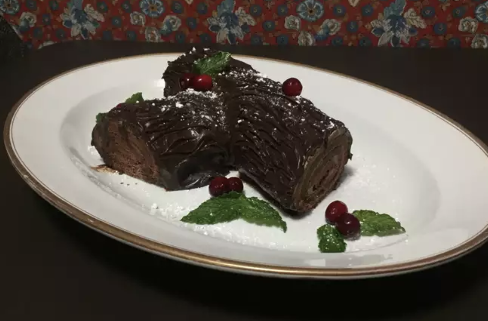

Chocolate Yule Log
Chocolate Yule Log Recipe

Description:
This classic holiday dessert is a showstopper, but it's often better looking than it is tasting, which is not the case here.
Ingredients
- Sugar
- Butter
- Coffee-flavored liqueur
- Cocoa powder
- Mascarpone cheese
- Flour
- Vanilla
- Egg
- Chocolate chips
Steps
- Make the filling.
- Make the cake batter and pour it into a prepared pan.
- Bake until the edges start to pull away.
- Turn the cake out on a kitchen towel, roll, and let cool.
- Unroll the cooled cake and spread the filling on top.
- Re-roll it, then sprinkle it with more powdered sugar. Refrigerate until firm.